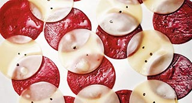

Carpaccio, Ravioli, Milhojas. Un estudio de la remolacha como Snack.
Remolacha, Quesos, Nueces, Vainilla

| Remolacha | 400 gr. |
| Queso Manchego semicurado | 200 gr. |
| Queso Roquefort | 100 gr. |
| Nueces | 4 un. |
| Aceite Girasol | 30 ml. |
| Vainas Vainilla | 2 un. |
| Sal Maldon | 2 Guardar. |
-
Trabajo General
- Abrir las vainas de vainilla longitudinalmente. Recuperar las semillas con la ayuda de una puntilla.
- Mezclarlas col el aceite de girasol. Colocarlas en un biberón y dejar reposar en un lugar oscuro y fresco para evitar la oxidación.
- Cortar la remolacha con un cortafiambres o mandolina en láminas de 1 mm. de grosor.
- Cortar círculos de 5 cm de ø con la ayuda de un cortapastas circular. Reservar.
- Cortar el queso Manchego con un cortafiambres o mandolina en lonchas de 1 mm. de grosor.
- Cortar círculos de 5 cm de ø con la ayuda de un cortapastas circular. Reservar.
- Partir las nueces y el Roquefort en trozos de 1 cm. Reservar este último en la nevera. Acabado/Presentación
- Para el Carpaccio: intercalar círculos de remolacha y Manchego, rociar con unas gotas de aceite de vainilla.
- Calentar unos segundos en el microondas, espolvorear con un poco de sal Maldon y servir inmediatamente.
- Para el Milhojas: colocar círculos de remolacha y Manchego unos encima de otros. Aliñar con el aceite de vainilla.
- Calentar unos segundos en el microondas, espolvorear con un poco de sal Maldon y servir inmediatamente.
- Para los Raviolis: extender una lámina de remolacha, colocar en el centro un trozo de nuez y un trozo de Roquefort.
- Cubrir con otro disco de remolacha. Montar unos 6 raviolis por ración. Aliñar y con el aceite de vainilla y un poco de sal Maldon. Servir frío.